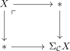
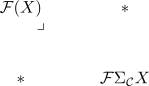

loop functor of excisive reduced functors as equivalence
Proposition
Then
\begin{align*}
\Omega_{\mathrm{Exc}_*(\mathcal{C}, \mathcal{D})}
\end{align*}
is a joyal equivalence
Proof
Define
\begin{align*}
S: \mathrm{Exc}_*(\mathcal{C}, \mathcal{D}) \rightarrow \mathrm{Exc}_{*}(\mathcal{C}, \mathcal{D})
F \mapsto F \Sigma_{\mathcal{C}}
\end{align*}
given by <precomposition> with the suspension functor.
Note that this is welldefined by ???
Note that
\begin{align*}
\Omega_{\mathrm{Exc}_*(\mathcal{C}, \mathcal{D})} \cong (\Omega_{\mathcal{D}})_*
\end{align*}
is postcomposition with where we may compute the limit pointwise (todo)
- inclusion preserves finite limits
We will claim that
\begin{align*}
\mathcal{F} \rightarrow \Omega_{\mathcal{D}} \mathcal{F} \Sigma_{\mathcal{C}}
\end{align*}
is an equivalence for all $F$.
We check this objectwise:
Take $X \in \mathcal{C}$. Then

where application of $\mathcal{F}$ gives

Hence
\begin{align*}
\mathcal{F}(X) \rightarrow \Omega_{\mathcal{D}} \mathcal{F}(\Sigma_{\mathcal{C}})(X)
\end{align*}
is an equivalence
Hence
\begin{align*}
\mathrm{id} \simeq& \Omega S \\
\simeq& (\Omega_{\mathcal{D}})_* (\Sigma_{\mathcal{C}})^* \\
\cong& S \Omega
\end{align*}
since <precomposition & postcomposition commute>
By claiming that this equivalence is natural, we are done